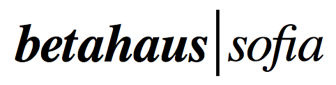

Bring a practical challenge to group of peers to learn their approach, tools, workflow and mindset.
Fixer Fridays! We're running Fixers on AI-based challenges every Friday at Betahaus Sofia at 4pm - 7pm. We want to empower people to use AI!

Upcoming Challenges
Brian Hankey: Predicting defaults of payday loans
EnhanCV: Finding good cultural matches for hiring
BG Mama: Aggregate and summarise advice on a given topic
Can you help? Please register here. (You attend free and choose where we donate the profits.)
You can submit your challenge here.
Schedule
May 26th: challenge tbd
June 2nd: challenge tbd
June 9th: challenge tbd
Attendance is € 10, and limited to 5 observers per session. Fixers and Challengers are free.
Apply to attend here.
Each session is facilitated to a strict structure:
1. Delegate the challenge
2. Fixers ask clarification questions
3. Fixers work with each other while others observe
4. Final presentation
5. Feedback from the challenger